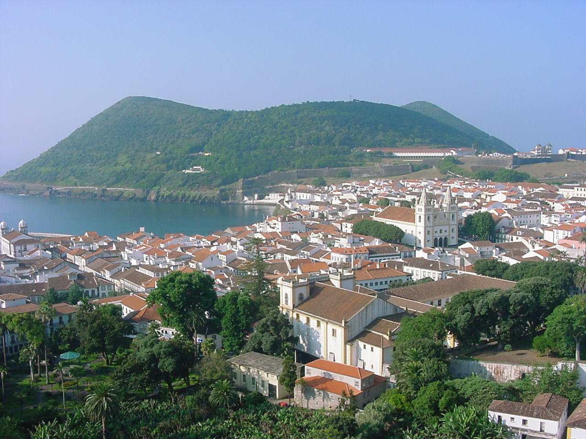
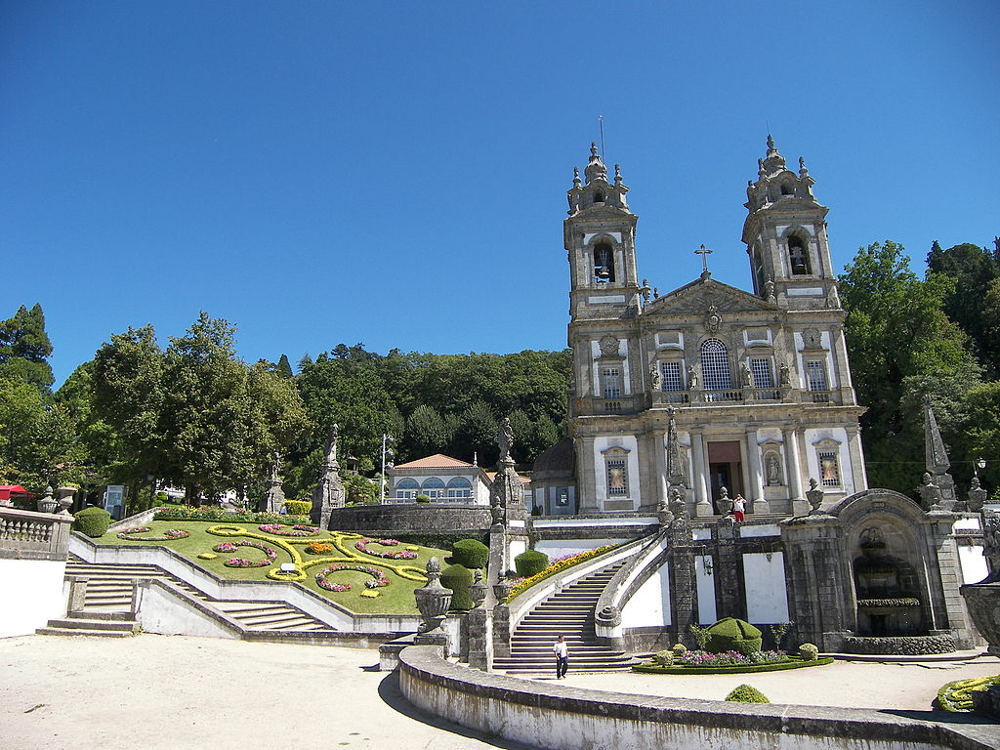
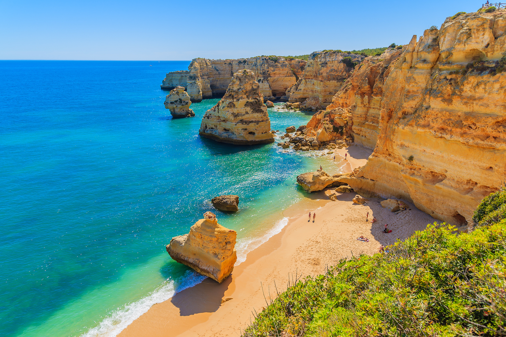
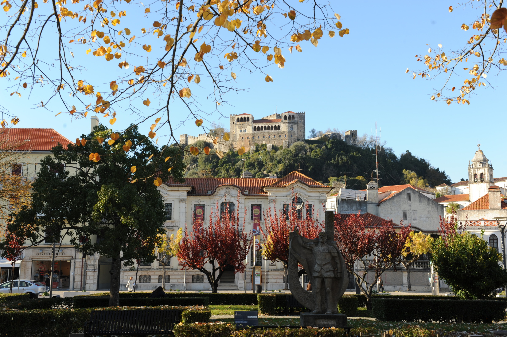
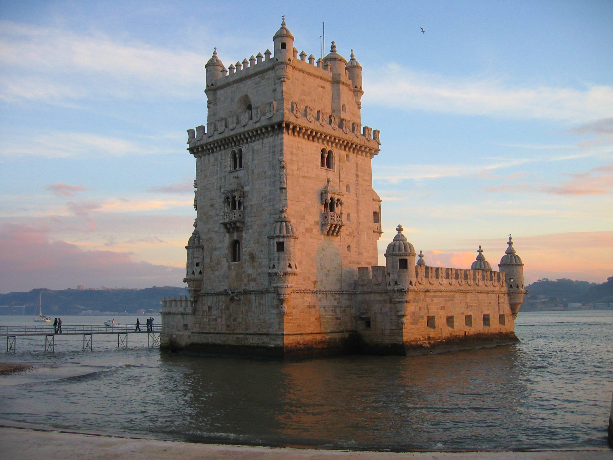
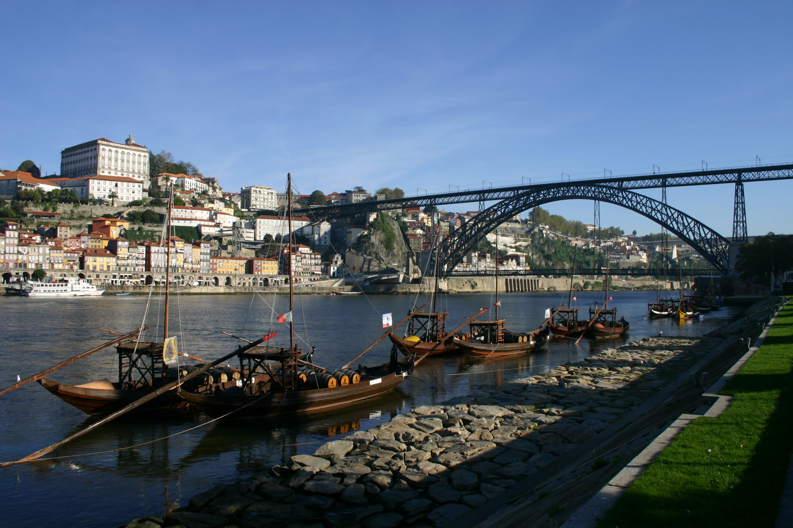

GDGBraga

GDGCoimbra

GDGFaro

GDGLeiria

GDGLisboa
GDGMadeira

Dedicados em criar os melhores eventos tecnológicos.
A qualquer nível de contacto, qualquer capítulo da GDG Portugal
está preparado para organizar qualquer tipo de evento tecnológico.
Todos os membros têm experiência em organizar, desde pequenas "techtalks" locais a conferências 100+ participantes com oradores internacionais.
Seja nacional ou internacional, os nossos organizadores estão preparados para falar de tecnologia.
Partilhamos o conhecimento adquirido através de workshops por Portugal sobre tecnologias Google, desde workshops de introdução a alto nível de especialização.
Estamos atentos às necessidades e interesses das comunidades e procuramos sempre entregar o que nos é pedido. Comunidade sempre em primeiro lugar.
Colaboramos com qualquer comunidade tecnológica, de forma a entregar a melhor qualidade de conteúdo e eventos.
Procuramos crescer através da partilha e abertura a novos organizadores com a mesma paixão que nós por tecnologia.
Porque temos de dar a cara, estes são os organizadores presentes em Portugal, constantemente a oferecer o melhor para a comunidade.
#Links sociais#
Pelas comunidades passam centezas pessoas, algumas tornam-se organizadores depois de um trabalho bem entregue alguns decidem guardar as trouxas.
Aqui estão os testemunhos dos organizadores veteranos, amigos, colegas.
#Testemunho#
#Links Sociais#